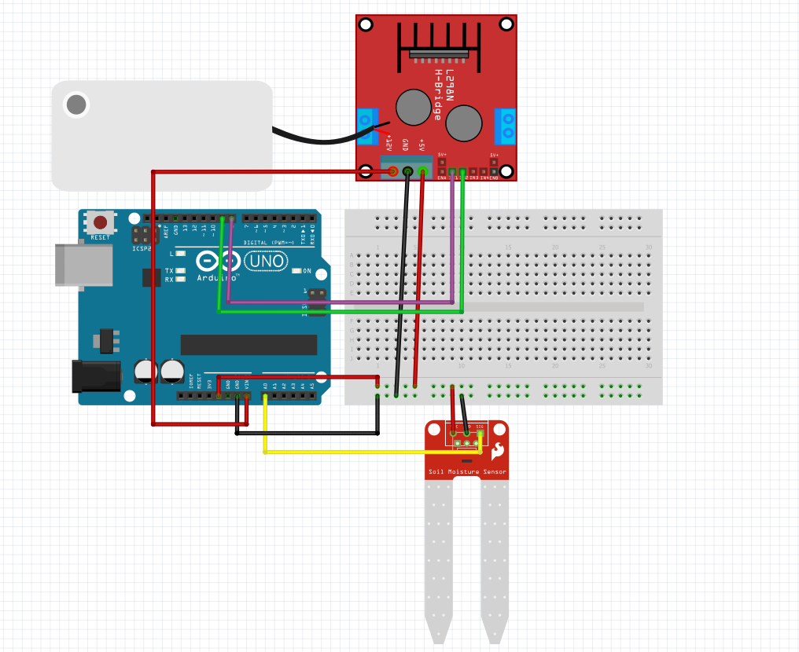
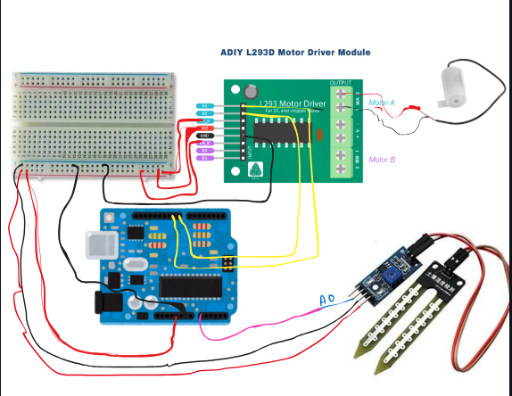

Automatic Plant Watering System Using Soil Moisture Sensor and Arduino
This tutorial provides a complete guide to creating an Automatic Plant Watering System, focusing on controlling the water pump using L293D or L298 motor drivers instead of a relay.
Components Description
Here is a detailed description of all the components used in the Automatic Plant Watering System project:
1. Arduino Uno
- Description:
Arduino Uno is a microcontroller board based on the ATmega328P. It has 14 digital input/output pins, 6 analog inputs, a 16 MHz quartz crystal, and USB connectivity for programming and power. - Purpose of the Project:
The Arduino reads the soil moisture sensor's output and controls the motor driver to turn the pump on or off based on soil dryness.
2. Soil Moisture Sensor
- Description:
The soil moisture sensor measures the volumetric water content of the soil. It has two probes that detect the resistance in the soil, with lower resistance indicating more water content. - Pins:
- VCC: Connects to the Arduino's 5V supply.
- GND: Connects to the Arduino's ground.
- Signal: Provides an analog output based on soil moisture.
- Purpose in Project:
It detects the soil's dryness and sends the data to the Arduino for decision-making.
3. L293D Motor Driver (or L298)
- Description:
L293D is a motor driver IC that allows bidirectional control of DC motors and other high-power devices. It can handle motors requiring up to 36V and 600 mA.
L298 can handle higher current and voltage requirements, making it suitable for heavier pumps. - Pins:
- Enable Pins: Used to activate the motor channels.
- Input Pins: Control the direction of the motor.
- Output Pins: Connect to the motor terminals.
- VCC and GND: Power the motor and the IC itself.
- Purpose in Project:
The motor driver regulates power to the pump, enabling the Arduino to control it effectively.
4. Submersible Water Pump
- Description:
A submersible water pump is a compact, waterproof device designed to move water. The voltage and current ratings should match the motor driver and power supply. - Purpose in Project:
It pumps water to the plant when activated by the motor driver.
5. Power Supply
- Description:
A stable power source is essential for both the Arduino and the pump. This could be a 5V adapter for the Arduino and a higher voltage source (e.g., 12V) for the motor driver and pump. - Purpose in Project:
Supplies power to the components.
6. Jumper Wires
- Description:
These are flexible wires with pin connectors on either end, used for making temporary circuit connections on a breadboard or between modules. - Purpose in Project:
Connect the Arduino, sensor, motor driver, and pump.
7. Breadboard (Optional)
- Description:
A breadboard is a tool for making temporary circuits without soldering. - Purpose in Project:
It allows easy and flexible connections during prototyping.
8. LED Indicators (Optional)
- Description:
LEDs are light-emitting diodes used for visual indication of circuit states. - Purpose in Project:
Indicates whether the system is active or if the pump is running.
Updated Circuit Connections
Soil Moisture Sensor Connections:
- VCC → Arduino 5V
- GND → Arduino GND
- Signal → Analog pin A0
L293D Motor Driver Connections:
- Enable Pin (1,2EN): → Arduino Pin 2 (PWM for speed control, if needed)
- Input Pins (IN1 and IN2):
- IN1 → Arduino Pin 2 for L298 motor driver module and Pin 8 for L293D motor driver module
- IN2 → Arduino Pin 3 for L298 motor driver module and Pin 9 for L293D motor driver module
Note: You can change the pin connections as per your requirements.
- Output Pins (OUT1 and OUT2):
- Connected to the two terminals of the submersible water pump.
- Connect to the power supply for the pump (e.g., 12V for a 12V pump).
- Ensure that the voltage matches the pump's specifications.
- GND: Connect to the common ground.

- Above one with L298 module

- This above circuit is for L293D module
Code Explanation
Here’s the updated code and explanation:
Code for L293D/L298 Motor Driver
- int sm = A0; // Soil moisture sensor connected to analog pin A0
- int MA1 = 8; // Motor pin 1 connected to L293D
- int MA2 = 9; // Motor pin 2 connected to L293D
- void setup() {
- pinMode(sm, INPUT); // Soil moisture sensor is an input
- pinMode(MA1, OUTPUT); // Motor pin 1 is an output
- pinMode(MA2, OUTPUT); // Motor pin 2 is an output
- Serial.begin(9600); // Start serial communication for debugging
- }
- void loop() {
- int x = analogRead(sm); // Read the value from the soil moisture sensor
- Serial.print("Soil moisture value is: ");
- Serial.println(x);
- if (x <= 300) { // If soil is dry (value below threshold 300)
- digitalWrite(MA1, HIGH); // Turn on the motor in one direction
- digitalWrite(MA2, LOW);
- delay(3000); // Keep the motor running for 3 seconds
- } else {
- digitalWrite(MA1, LOW); // Turn off the motor
- digitalWrite(MA2, LOW);
- }
- delay(100); // Small delay before the next reading
- }
Code Explanation
Pin Assignments
- sm (A0):
- Reads the soil moisture sensor value.
- Output is an analog voltage, with lower values indicating drier soil.
- MA1 and MA2 (Pins 8 and 9):
- Control the motor via the L293D motor driver.
- HIGH on MA1 and LOW on MA2 turns the motor on in one direction (water pumping).
- Both MA1 and MA2 set to LOW stops the motor.
void setup()
- Pin Modes:
- sm is set as an input for reading soil moisture.
- MA1 and MA2 are outputs to control the motor via the L293D driver.
- Serial Communication:
- Used for debugging, the serial monitor displays real-time soil moisture readings.
void loop()
- Sensor Reading:
- The soil moisture value is read using analogRead(sm) and printed to the serial monitor.
- This allows monitoring and debugging of soil moisture levels.
- Motor Control Based on Soil Moisture:
- MA1 is set to HIGH and MA2 to LOW, turning the motor on.
- The motor runs for 3 seconds (delay(3000)), simulating water pumping.
- Both MA1 and MA2 are set to LOW, turning the motor off.
- Delay:
- A short delay (delay(100)) ensures the system rechecks the soil moisture without overloading the microcontroller.
Circuit Description
- Soil Moisture Sensor:
- Consists of two probes that measure the soil's resistance to estimate moisture levels.
- Outputs an analog signal read by the Arduino on pin A0.
- L293D Motor Driver:
- Allows control of the pump motor.
- Input pins (MA1 and MA2) receive signals from Arduino pins 2 and 3.
- Outputs power to the motor (Pins Motor A: OUT1, OUT2).
- Pump Motor:
- Connected to the Motor A terminals of the L293D driver.
- Pumps water when soil is dry (controlled via MA1 and MA2).
Key Points for Students
- Why Use L293D Instead of Relay?
- An L293D motor driver is more versatile and can control motor direction and speed.
- A relay is simpler but offers no motor direction control.
- Threshold Adjustment:
- The 300 value can be fine-tuned depending on soil conditions or specific project requirements.
- Debugging with Serial Monitor:
- Use the serial monitor to observe soil moisture readings and system behavior in real time.
Note: you can set pins as according to your needs!
Key Points for Students
- Threshold Adjustment:
- The value 300 is a threshold for dry soil. This can be adjusted based on the soil type and sensor calibration.
- Relay Behavior:
- The relay acts as a switch, allowing the Arduino to control the pump using a small control signal.
- Power Considerations:
- Ensure the pump has an adequate power source, as the Arduino cannot directly supply the required current.
- Customization:
- Use the optional LED (b) to indicate the pump's status, e.g., ON when the pump is running.
You can customize the code as per your requirements!!
Working Principle
- Sensor Functionality:
- The soil moisture sensor measures the soil's moisture level and sends the data to the Arduino.
- Pump Activation:
- If the soil moisture level is below the defined threshold (e.g., 300), the Arduino activates the motor driver to turn on the pump, watering the plant.
- Cycle Continuation:
- The system continuously monitors the soil moisture level, turning the pump on and off as needed to maintain optimal moisture.
Advantages of Using L293D/L298 Over Relays
- Bidirectional Control:
The motor driver allows forward and reverse control, which is useful for specific pump types. - PWM Support:
L293D/L298 can control the pump speed using PWM signals. - Integrated Circuitry:
These drivers simplify the circuit by combining control and power handling in one IC.
Additional Notes for Students
- Component Selection:
- Ensure the motor driver matches the pump's voltage and current ratings.
- The L298 is better for high-power pumps.
- Power Supply:
- Use separate power supplies for the Arduino and motor driver if the pump requires a higher current.
- Threshold Adjustment:
- Test and adjust the moisture threshold value based on soil conditions and sensor calibration.
- Enhancements:
- Add an LCD or OLED display to show real-time soil moisture levels.
- Implement a water-level sensor to prevent dry-running of the pump.
Conclusion
This Automatic Plant Watering System integrates Arduino, sensors, and actuators to provide an efficient and automated solution for plant care. By using motor drivers instead of relays, the system gains flexibility and scalability, making it a robust choice for students and hobbyists.
### **Working of the System**
- The moisture sensor will detect this change when the soil dries up.
- The Arduino will turn on the relay, which starts the pump and waters the plant.
- After a set duration, the pump turns off, and the cycle continues to monitor the moisture level.